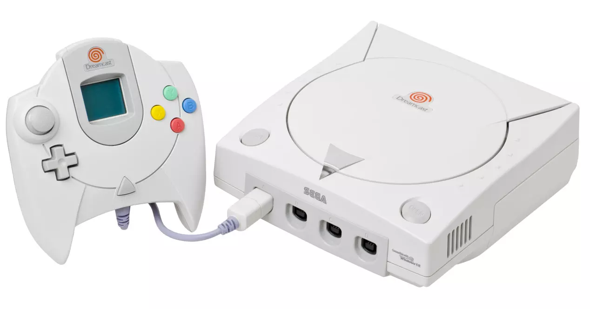

Dreamcast
Con la sexta ola de consolas la industria comienza a concentrarse, dejan de aparecer apuestas de marcas fuera de las tradicionales del mercado y se consolida Sony como la principal rival a batir. Terminan de utilizarse calificativos como 64 ó 128 bits para referirnos a estas máquinas y Sega vuelve a intentarlo a la desesperada antes de tirar la toalla y centrarse en el desarrollo de software en vez de hardware. De todas formas, en 1998 vemos el lanzamiento de Dreamcast, la que es para muchos la mejor máquina de los padres de Sonic, y a la que no se dio la oportunidad de triunfar por el éxito por todo lo alto que todavía disfrutaba PlayStation cuando llegó a las tiendas.